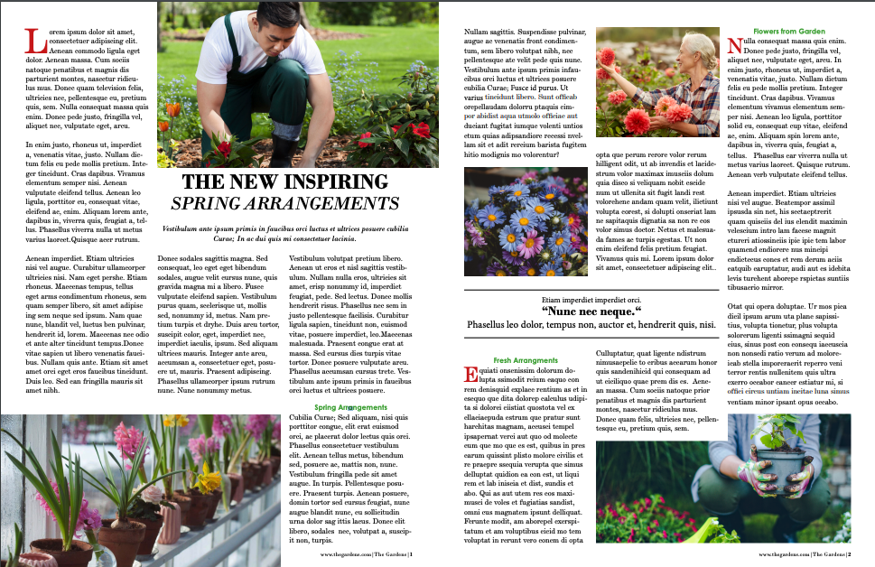
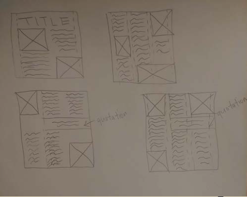

Magazine Spread


Objective
Create fictional topic and create magazine and digital spreads. It introduced us to grid in the
composition, setting type and involved colours. This was a group project and my contribution was to
make the magazine and digital spreads. The artifact below shows the initial stage of the layout for
both magazine and digital.

Process
Brainstorming ideas of which fictional topic to choose from and in the end, the group chose “Spring
Garden”
Next step was to create layout sketches and I decided to go with a minimalistic look. The layout
sketches were done on a piece of paper and was later transferred to Adobe InDesign to put the work
together.
Challenges
Given fixed dummy text limited my initial creativity that I had in my mind. This challenged me to
make changes in picture size, column grid, and insert texts on the cover page. After several
adjustments, I was able to fit all the texts and images.
Choosing a colour scheme for the titles on the cover page and images were difficult. I decided to
extract colours from the flower and change them slightly so it resembles, yet have contrast so it
can be legible. For the images in the magazine spread, I thought of colours that reminded me of the
“theme” and my group came with “yellow, green, and red so I decided to find images that include
these colours mainly.